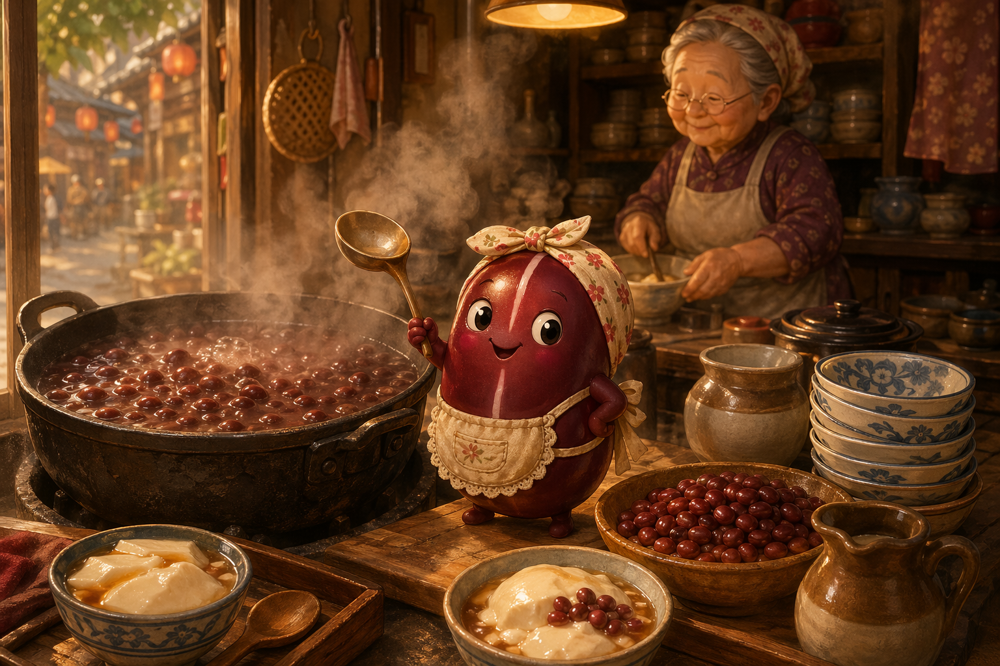
Story 09
Red Bean and the Warm Heart
Inside a tiny Taipei douhua shop, one very small red bean proves that caring for others can warm an entire city block.
Mandarin Spotlight: 紅豆 (hóngdòu) = red bean
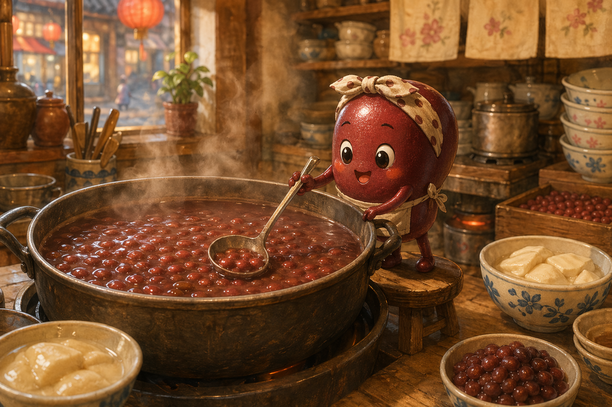
The Warm Thing at the Bottom
Hóng Dòu was only a tiny red bean, no bigger than a pinky nail, but she had the biggest heart in Grandma Liú's douhua shop.
Every day she stirred the great iron pot and murmured, "Everyone needs a little sweetness."
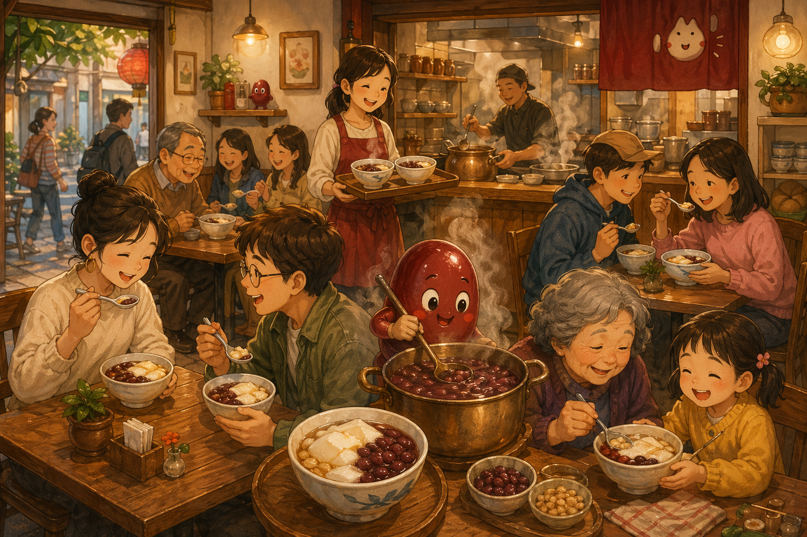
The Shop Everyone Loved
The shop on Yongkang Street was tiny, steamy, and famous. Office workers, grandmothers, students, and tourists all lined up for silky 豆花 (dòuhuā), tofu pudding, with Hóng Dòu's sweet beans on top.
Food critics called the beans transcendent. Hóng Dòu called them her babies.
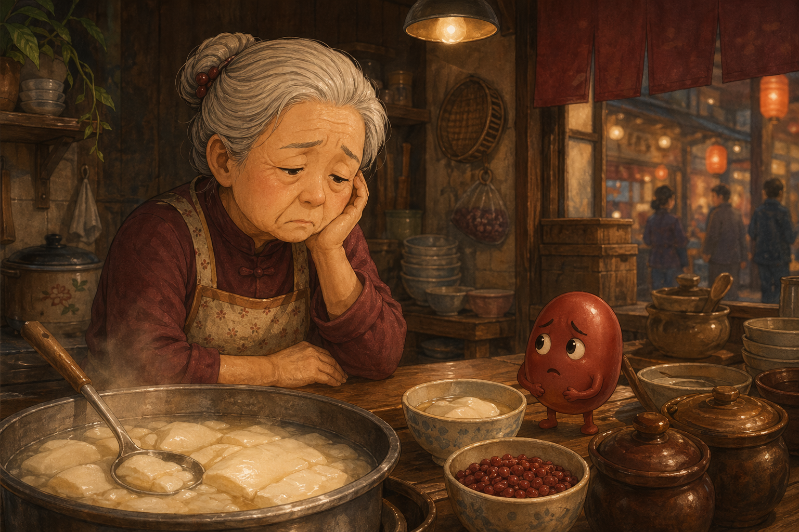
A Quiet Thursday
Then one Thursday, Grandma Liú came into the shop tired and shaky and, most alarming of all, did not sing while she cooked.
Hóng Dòu noticed immediately. Something was wrong. Even the peanuts could tell, and peanuts rarely noticed anything important.
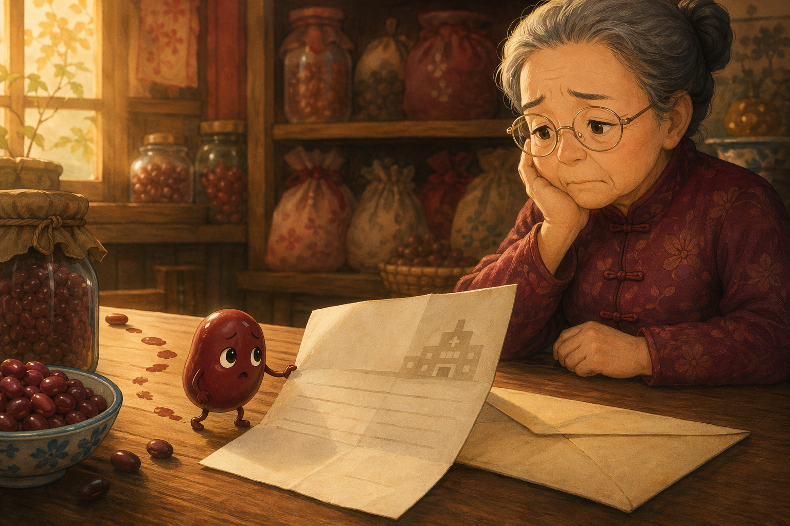
The Letter
At noon, Grandma Liú sat down with a hospital letter and put her head in her hands. Hóng Dòu climbed out of the pot, dripped across the tablecloth, and read what she could.
Grandma Liú was sick. Hóng Dòu said only, "Oh." Sometimes that is the biggest word in the room.
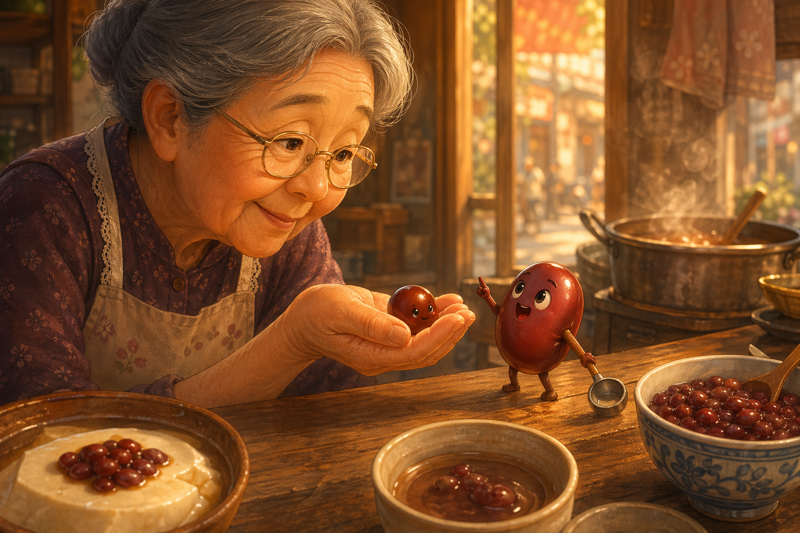
Go Home and Rest
Grandma Liú picked the tiny bean up and gave a tired laugh. Hóng Dòu gathered all her courage. "Go home. Rest. I'll take care of the shop."
Grandma blinked. "A bean can't run a shop." Hóng Dòu lifted her ladle. "A bean who watched you for forty-seven years can."
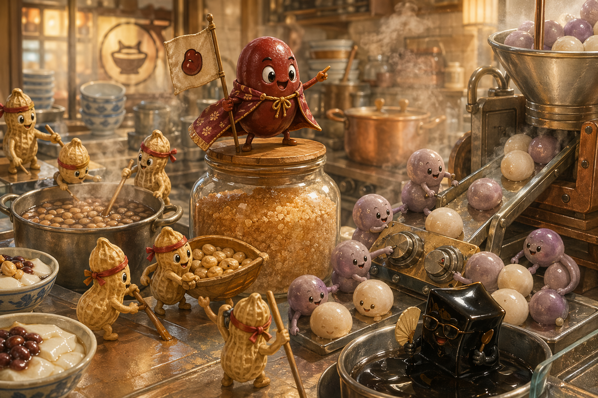
Kitchen Commander
Once Grandma Liú went home, Hóng Dòu organized the whole kitchen. Taro balls rolled to the stove, peanuts stirred in teams, and passing-by Cǎo kept everyone calm and cool.
From atop the sugar jar, Hóng Dòu called, "Low heat! Slow time! A pinch of sugar at exactly the right moment!"
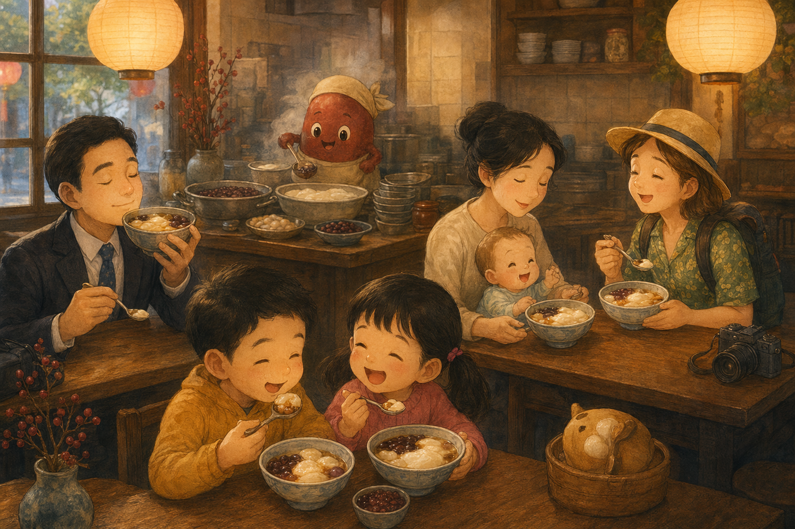
One Bowl at a Time
A businessman who had just been fired took one bite and relaxed. A tired mother, a homesick tourist, and two squabbling kids all softened after their bowls.
Hóng Dòu made every serving with love. The whole shop felt like being hugged from the inside.
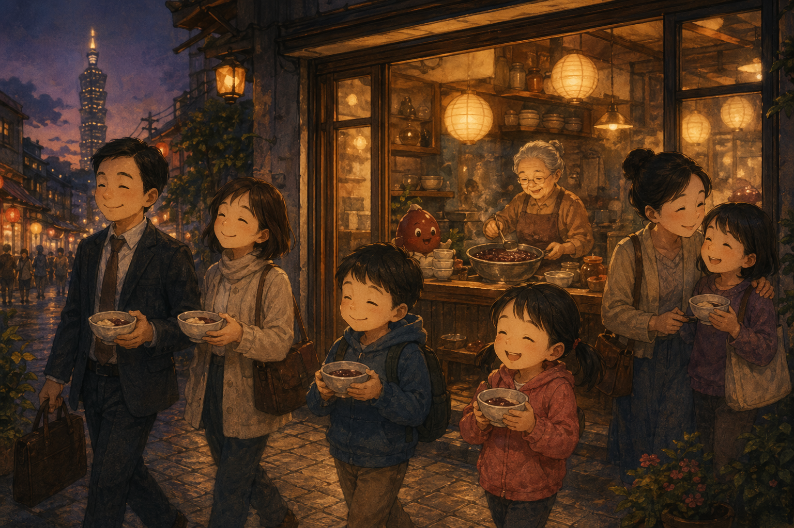
Sweetness Works
By closing time, everyone who left the shop looked a little lighter than when they came in.
The businessman had hope again. The crying baby slept. The children shared. Hóng Dòu was exhausted, but her tiny heart glowed like a banked ember.
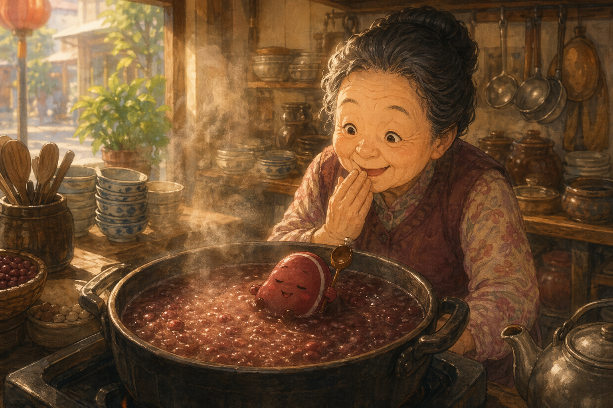
Morning Return
The next morning, Grandma Liú returned to find the shop clean and a pot of beans already simmering. Hóng Dòu floated on top, half asleep, still holding her ladle.
"Everyone got fed," Hóng Dòu said. Grandma Liú smiled the sort of smile that reaches the deepest part of a kitchen.
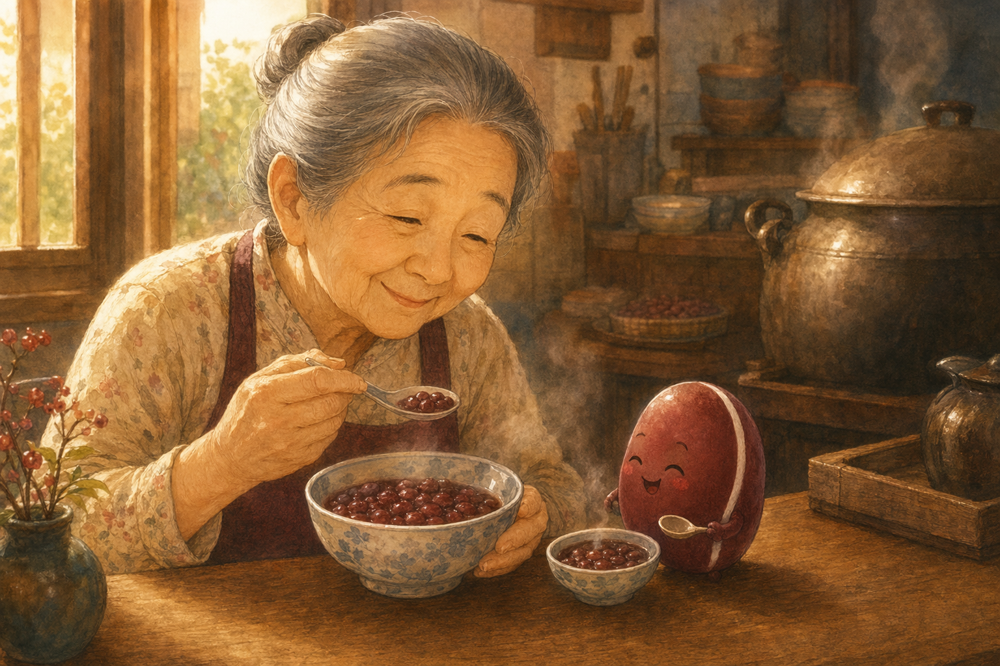
Let Someone Care for You
Then Grandma Liú made a tiny bowl of red bean soup and set it in front of the world's smallest, warmest cook.
"Eat," she said. And at last Hóng Dòu let herself be cared for too. It was, she had to admit, absolutely delicious.
Goodnight, caring one. May you rest deeply, feed yourself kindly, and remember that even the warmest heart deserves a warm bowl in return.